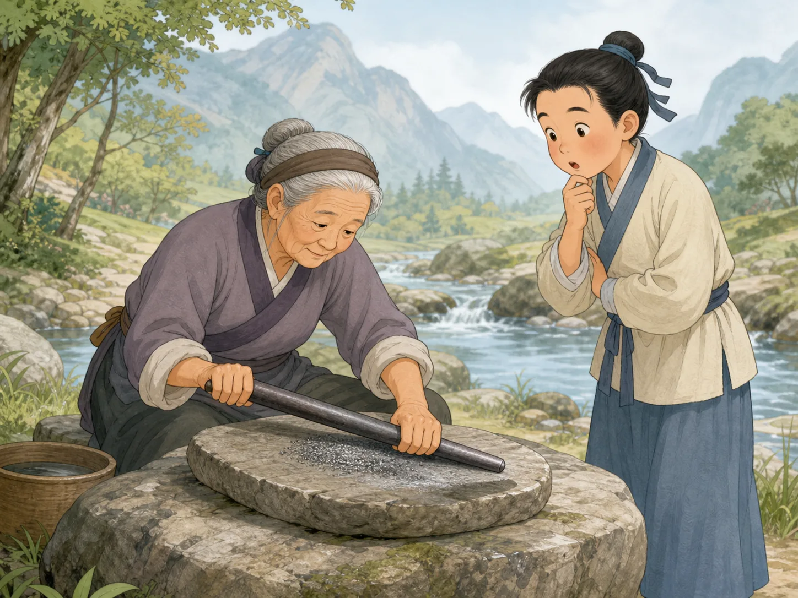
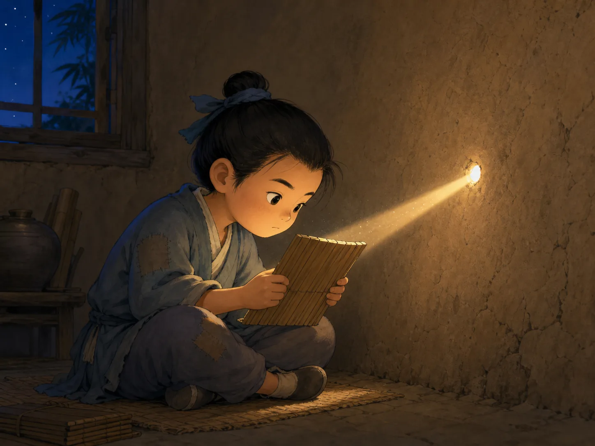

成语里藏着的小故事
Tiny Stories Hidden Inside Idioms
Page 1
四个字，后面常常站着一整个故事
Four Characters Can Hold a Whole Story
中国人常常会说成语。成语看起来只有短短几个字，可很多时候，它后面站着一个完整的小故事。
所以成语有点像很小很小的故事盒子。你把盒子一打开，里面就会跳出一个人、一件事，或者一句一直被记住的话。
也正因为这样，孩子学成语时，常常不是先背意思，而是先记住那个故事。
Chinese people often use idioms. An idiom may be only a few characters long, but behind it there is often a whole little story.
That makes idioms feel a bit like tiny story boxes. Open one, and out comes a person, an event, or a sentence people kept remembering.
That is also why children often learn the story first and the meaning second.
Page 2
铁杵磨成针：慢一点，也可以真的变
Grind an Iron Rod into a Needle

A thick iron rod looks nothing like a needle, yet the story says steady effort can slowly change it.
有个很有名的故事，说李白小时候不想读书，跑出去玩。路上，他看见一位老奶奶坐在溪边，拿着一根铁棒在石头上磨。
李白问她在做什么。老奶奶说：“我要把它磨成针。”这话听起来太夸张了，可也正因为夸张，大家一下就记住了。
后来，“铁杵磨成针”就变成一个成语，用来告诉人：你现在觉得太难的事，只要一直做下去，也可能真的慢慢做成。
One famous story says that when Li Bai was young, he did not want to study and ran off to play. On the way, he saw an old woman by a stream, grinding an iron rod against a stone.
Li Bai asked what she was doing. She said, "I am grinding it into a needle." The idea sounds impossible, and that is exactly why people remember it so well.
Later, this story became an idiom. It tells people that even a task that seems far too hard right now may still be finished if you keep going long enough.
Page 3
凿壁偷光：光只有一点点，也要想办法学
Borrow a Little Light and Keep Learning

The hole in the wall is tiny and the light is weak, but the child still wants to keep reading.
还有一个故事，说一个家里很穷的孩子，晚上点不起灯，可他又很想读书。怎么办？他就在墙上凿了一个小洞，借隔壁家的灯光来看书。
这个故事后来变成了“凿壁偷光”。它让人记住的，不只是那一点点光，而是这个孩子明明条件不好，还是想办法继续学。
所以这个成语常常不是在说“墙上有个洞”这么简单，而是在说：就算手里不多，也别轻易停下。
Another story tells of a poor child who could not afford lamp oil at night but still wanted badly to read. So he cut a tiny hole in the wall and borrowed light from the neighbor's house.
That story later became an idiom too. What people remember is not only the thin beam of light. They remember that the child had very little, yet still found a way to keep learning.
So the idiom is not only about a hole in a wall. It is also about not giving up just because you do not have much to work with.
Page 4
画龙点睛：最后一下，忽然让一切活起来
Add the Eyes, and the Whole Thing Comes Alive
Sometimes the final small touch is the step that makes everything feel alive.
“画龙点睛”的故事里，画家先把龙都画好了，可偏偏没有点眼睛。别人觉得奇怪，他却说：眼睛一点上去，龙就会飞走。
后来，他真的点上最后那一下。传说里，龙一下就活了起来。你不一定要把这个传说当真，可大家都明白这个故事在说什么。
有时候，一件事前面已经做了很多很多，最后最关键的那一步一到，整个东西忽然就亮了。成语“画龙点睛”说的，就是这种最后一下的力量。
In the story behind "adding eyes to the dragon," a painter finished the whole dragon but left out the eyes. Other people were puzzled, but he said that once the eyes were added, the dragon would fly away.
Then he made the final stroke. In the legend, the dragon suddenly came alive. You do not have to believe the legend literally to understand why people kept the story.
Sometimes a great deal of work is already finished, and then one final important step suddenly makes the whole thing shine. That is the power this idiom remembers.
小结
In Summary
成语很短，可里面常常装着很长的记忆。一个人磨铁棒，一个孩子借灯光，一个画家点上最后一笔，后来都变成了大家一直会说的话。
所以成语有意思的地方，不只是它短，而是它用几个字，就把一个故事和一种做事的劲头一起装了进去。
Idioms are short, but many of them carry long memories. One person grinding an iron rod, one child borrowing light, one painter adding the final stroke: later, all of them became sayings people kept using.
That is what makes idioms special. They are not only short. In just a few characters, they can hold both a story and a way of facing life.